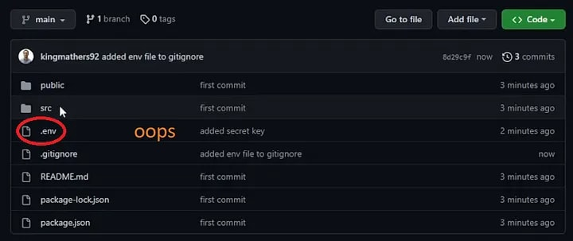
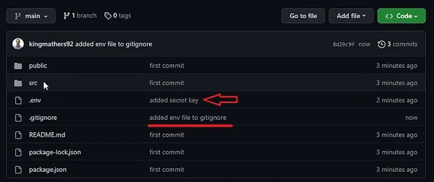
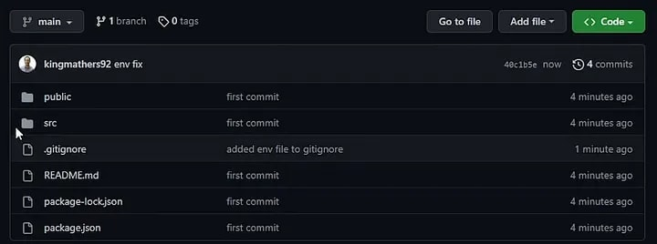
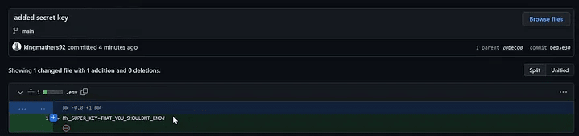

以项目中常见的 .env 文件为例，.env 文件通常位于项目的根目录中，并且不提交给版本控制系统（例如 Git）。它用于存储敏感信息，例如数据库密码、API 密钥等，这些信息不应该公开。
通过使用 .env 文件，开发人员可以将代码和配置分开，从而更轻松地维护和部署应用程序。
有时我们可能在将代码推送到 git 之前忘记将.env添加到.gitignore，您可以按照以下几个步骤来恢复它：
要注意的是，我们不仅要从 git 存储库中删除它，最重要的是还要从 Git 历史记录中删除它。

立即删除文件，并将其添加到您的 .gitignore 文件中。
# Secret
.env
此时你会发现.gitignore 文件不会取消跟踪已提交的更改。那么我们该如何解决这个问题呢？
您可以通过运行以下命令从 Git 中删除文件。
git rm -r --cached .env随后我们推送此更改，您将看到该文件已在 GitHub 中消失。
如果我们只是想以后不再跟踪某文件，对历史跟踪不感兴趣到这一步就好了。但 .env 是敏感文件，我们需要从历史提交中完全删除它，继续往下看。

然而，这并没有完全解决我们的问题。如果我们查看 Git 历史记录，我们仍然可以找到该文件并暴露敏感信息！

要完全删除该文件，我们可以使用以下命令。
git filter-branch --index-filter "git rm -rf --cached --ignore-unmatch .env" HEAD您会收到这会弄乱您的历史记录的警告，因为这会遍历您的整个历史记录并 100% 消除其存在。要推送它，您必须运行以下命令。
git push --force此时我们查看历史记录，我们仍然可以看到包含此 .env 文件的提交，但内容是空的。